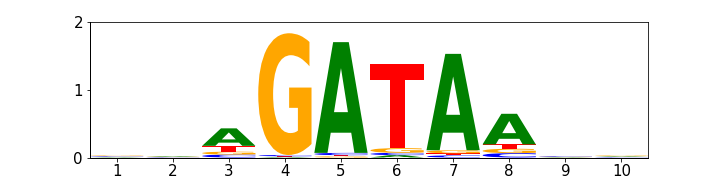
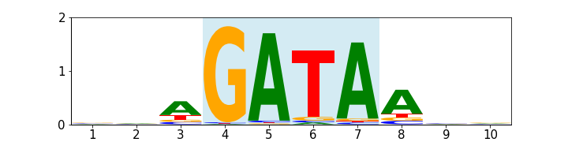
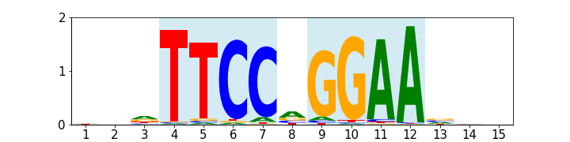

Overview¶
CtrlF-TF is a transcription factor binding site calling method utilizing high-throughput protein-DNA binding data in the form of k-mers. There are two major one-time components to the method:
Aligning k-mers to a PWM describing a core site
Compiling the aligned k-mers into searchable sequences
These steps are both performed in the command-line interface program ctrlf compile and in the library object CtrlF when it is initialized using any of the classmethods: from_parameters, from_alignment_file, or from_compiled_sites.
The final product is a table with compiled sequences that can be searched, with a match indicating a binding site.
Aligning k-mers: Input files¶
The alignment step requires two input data sources:
A k-mer file, a tabular file with the following columns:
k-mer |
k-mer (Reverse Complement) |
Score |
- A PWM with probabilities either of the following formats:
Tabular with no header and the first column as the nucleotides.
MEME format.
Tabular format example:
Nucleotide |
Position 1 |
Position 2 |
Position N |
|---|---|---|---|
A: |
0.25 |
0.25 |
0.25 |
C: |
0.25 |
0.25 |
0.25 |
G: |
0.25 |
0.25 |
0.25 |
T: |
0.25 |
0.25 |
0.25 |
Alignment Parameters: Core Selection¶
The PWM acts as a prior for what a binding site looks like in a general sense. Core selection is the process of selecting the region in an input PWM that describes a critically described region. This region acts as the definition of a site where aligned k-mers must fully overlap the region. Suppose one had an input PWM for a GATA factor similar to the following:
If one were to define a core for a GATA factor as “GATA”, then the selection of the core would be to chose this region of the PWM.
The highlighted region serves 2 purposes.
It is a submodel for k-mers to align to
- When calling sites, a site is defined as having overlapping k-mers
describe this region in aligned space
Cores can be defined in a number of ways. For the purpose of the associated publication, cores are described as regions where hydrogen bonds in protein-DNA complexes occur in structural data. PWMs often times will include flanking regions to cores and subsections can be selected in a number of ways. By default, the entire PWM model will be counted as the core, but one can select a subsection using any of the following methods:
Selection by specifying positions
Given positions with 1-base coordinates, one can select a core_start and a core_end position. Within the module, this is the parameter in the AlignParameter class:
ctrlf_tf.AlignParamaters(core_start = 4, core_end = 7)
The command-line application ctrlf compile specifies the same information using the -r or –range argument, which takes 2 parameters:
ctrlf compile --range 4 7
Selection by specifying a consensus site
A consensus site input allows one to define a subsection of the model without prior processing of the position of the core or the orientation. The consensus site is aligned to the PWM in both orientations, with the top scoring position determining the core subsection.
For example, to select the “GATA” subsection one would input the site “GATA”. The syntax in the module would be:
ctrlf_tf.AlignParameters(range_consensus = "GATA")
The syntax in ctrlf compile would be:
ctrlf compile --range-consensus GATA
Alignment Parameters: Cores With Gaps¶
The alignment and site definition does not have to be continuous. One can define a site as a range with one or more gaps. During the site calling process, the reported range will be a single continuous range, but the definition used in alignment and calling a site will adhere to the gapped definition. Gapped positions in the model are transformed into equiprobable positions during alignment.
Suppose one has a PWM for a STAT transcription factor with a single nucleotide gap in the middle of the TTCCNGGAA consensus and wanted to exclude the low information content gap from the alignment model.
Like with specifying core position, this can be done in two ways:
Input of relative positions to the model to define as gaps.
Given an input of relative 1-based positions to the core start, one can define position to skip as gaps in the alignment model. The syntax in the module is to give an iterable of positions:
AlignParameters(core_gaps = [5])
In the ctrlf compile program, the syntax is:
ctrlf compile --core-gaps 5
Using a period character ‘.’ within a consensus site
For a consensus site, a period signifies a gaped position in the PWM model. The syntax for the module would be:
AlignParameters(range_consensus = "TTCC.GGAA")
The syntax in the ctrlf compile program is:
ctrlf compile --range-consensus TTCC.GGAA
Alignment Parameters: Palindromic Models¶
Proteins can bind DNA with either palindromic or non-palindromic motifs. When CtrlF-TF aligns k-mers to a model and calls sites, the palindrome flag determines how k-mers are align and site orientation is described.
If the alignment has the palindrome argument set to False, each k-mer is scored in both orientations. The maximum scored position is used as the position of the k-mer to determine which orientation of the kmer matches the orientation of the model. When a site is called, it will be given a ‘+’ or ‘-’ orientation.
If the argument is set to True, each k-mer is scored in both orientations. For each orientation, the maximum scored position is used. When a site is called, it will be given a ‘.’ orientation.
By default, the palindrome parameter is set to False, but it can be set to True in the module with the following sytax:
ctrlf_tf.AlignParameters(palindrome = True)
It can be set to True in the ctrlf compile program using the -p argument:
ctrlf compile -p
Note
The PWM models used in these examples are not real datasets and only created for demonstration purposes.
Calling TF Binding Sites¶
CtrlF-TF uses the CtrlF class to align sequences, compile them into searchable sites, and search input sequences. Given a set of parameters, the one-time tasks are performed automatically and both the aligned k-mers and the compiled sequences can be saved for future use.
Following-up on the STAT3 example from earlier, the following code demonstrates initializing a CtrlF class from parameters.
from ctrlf_tf import AlignParameters, CtrlF
parameters = AlignParameters(pwm_file,
kmer_file,
range_consensus = "TTCC.GGAA",
palindrome = True)
# Initialize the CtrlF object
ctrlf = CtrlF.from_parameters(parameters)
# Save the aligned kmers
ctrlf.save_alignment("Alignment_Output.txt")
# Save the compiled sequences
ctrlf.save_compiled_sites("Compiled_Site_Output.txt")
One can also load a CtrlF object from saved aligned k-mers or compiled sequences. If it is loaded from aligned k-mers, it will automatically perform the sequence compilation.
# Load from the previous saved aligned k-mers
ctrlf = CtrlF.from_alignment_file("Alignment_Output.txt")
# Load from the previous saved compiled sequences
ctrlf = CtrlF.from_compiled_sites("Compiled_Site_Output.txt")
After the CtrlF object is initialized, it has 3 methods to call sites with:
CtrlF.call_sites() - Calls binding sites as SiteTuples
CtrlF.call_sites_as_bed() - Calls binding sites as BedTuples
The call_sites method takes a DNA sequence as input and returns a list of SiteTuples. SiteTuples are a NamedTuple with start, end, orientation, and threshold labels. The syntax for call_sites is:
site_tuple_list = CtrlF.call_sites("CACATGAGCTAGCGATCTAGCTGG")
Having a list of SiteTuples as a return can be used in a couple ways. For example, one could write a loop over an iterable of sequences and concatinate lists to one large list:
site_list = []
for sequence in sequences:
site_list += CtrlF.call_sites(sequence)
Lists of SiteTuples can also be converted into a Pandas DataFrame using the following syntax:
import pandas as pd
pd.DataFrame(site_list)
Which will create a DataFrame with the following format (example values):
start |
end |
orientation |
threshold |
|---|---|---|---|
5 |
14 |
0.467 |
|
20 |
29 |
0.482 |
|
… |
… |
… |
… |
The call_sites_as_bed method takes a DNA sequence, chromosome, and chromosome start position as parameters. It returns a list of BedTuples which have the labels: chromosome, start, end, name, score, and orientation. The syntax for call_sites_as_bed is:
bed_tuple_list = CtrlF.call_sites_as_bed("chr1", 10000, "CACGTAGCTATCGATC")
Just like the SiteTuples, BedTuples can be converted to a Pandas DataFrame with the following syntax:
pd.DataFrame(bed_tuple_list)
This returns a DataFrame in Bed6 format. For CtrlF output, each column is
chromosome: name of the chromosome
start: start position (0-based)
end: end position (1-based)
name: format {original_chromosome}:{sequence_start}-{sequence_end}_{site_number}
score: threshold value
orientation: +, -, or . indicating the orientation of the site
In addition to calling sites from input strins, CtrlF also has a method to call sites from a given fasta file path, call_sites_from_fasta. This method acts as a wrapper to read sequences in a fasta format and return sites in a bed format. If the fasta headers are in the format: {chromosome}:{start}-{end} then the genomic_label argument set to True will parse the header for the correct chromosome and start information. Otherwise, the entire header is placed in the chromosome label and the start and end are relative to the sequence position.
Fasta files can be parsed with the following syntax:
CtrlF.call_sites_from_fasta(fasta_file, genomic_label = True)
Which returns a pandas dataframe in Bed6 format. If the to_file parameter is specified, the output is written to a file instead of being stored in a dataframe.
CtrlF.call_sites_from_fasta(fasta_file, to_file = "output.bed")